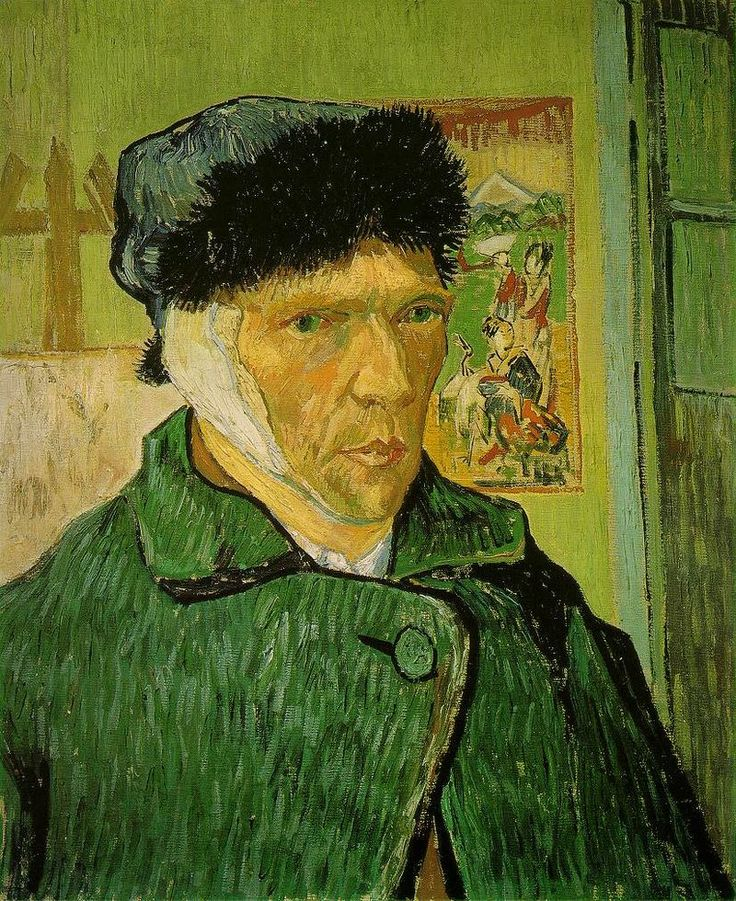

The Art of Resilience: Van Gogh's "Self-Portrait with Bandaged Ear"
Vincent van Gogh's "Self-Portrait with Bandaged Ear," painted in 1889, is a powerful and introspective work that captures a moment of both vulnerability and resilience in the artist's tumultuous life. This self-portrait serves as a poignant reflection on van Gogh's struggles, artistic passion, and the unwavering commitment to his craft.
A Glimpse into Turmoil
The self-portrait depicts van Gogh with a bandaged ear, a visible symbol of the artist's well-documented moment of crisis. Van Gogh, who famously cut off part of his own ear during a period of intense emotional turmoil, confronts the viewer with a gaze that reflects both pain and determination.
The Intensity of Self-Expression
Van Gogh's self-portraits are renowned for their emotional depth, and this painting is no exception. The brushstrokes are bold and expressive, conveying the artist's internal struggles and the intensity of his emotions. The palette, dominated by earthy tones and somber hues, adds to the overall atmosphere of introspection.
The Symbolism of Bandaged Ear
The bandaged ear in the self-portrait has been a subject of interpretation and speculation. Some see it as a direct reflection of van Gogh's personal challenges and mental health struggles. Others interpret it as a symbol of sacrifice for the sake of art, representing the artist's willingness to endure physical and emotional pain in pursuit of his creative vision.
The Triumph of Artistic Spirit
Despite the visible signs of distress, "Self-Portrait with Bandaged Ear" radiates a sense of resilience. Van Gogh, with his piercing gaze and furrowed brow, confronts the viewer with a raw authenticity. The painting becomes a testament to the indomitable spirit of an artist who, even in the face of personal challenges, continues to create and express himself.
Impact on Art History
This self-portrait has become an iconic representation of van Gogh's life and legacy. It holds a significant place in the narrative of art history, not only for its emotional potency but also for the glimpse it provides into the mind of a tormented genius.
Conclusion
"Self-Portrait with Bandaged Ear" invites us to witness van Gogh at a crossroads – a moment of inner turmoil transformed into a powerful work of art. In his self-portraits, the artist lays bare his soul, inviting viewers to connect with the humanity behind the paint. As we gaze into the eyes of van Gogh in this particular self-portrait, we are reminded of the enduring power of art to capture the complexities of the human experience.
In the words of the artist, "I am seeking. I am striving. I am in it with all my heart."